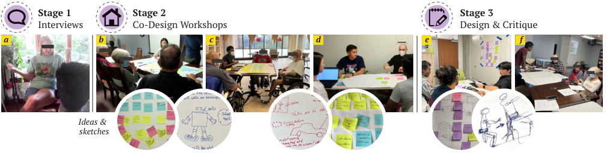
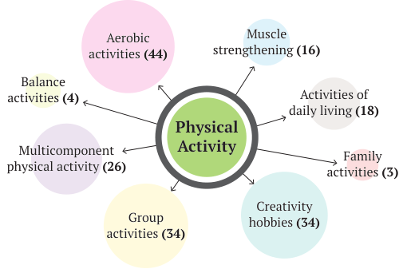
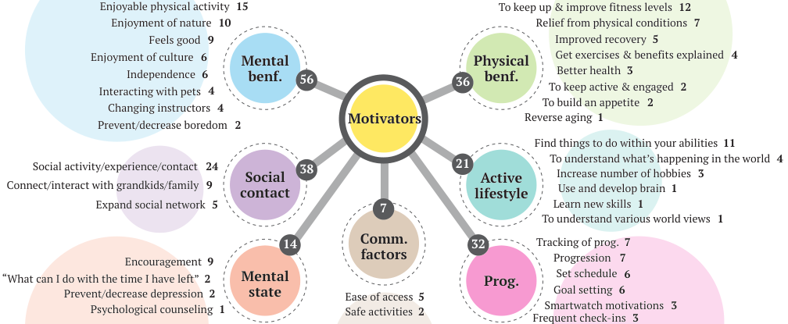
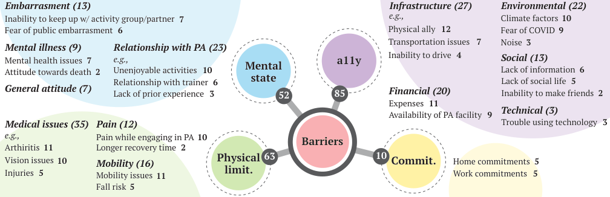
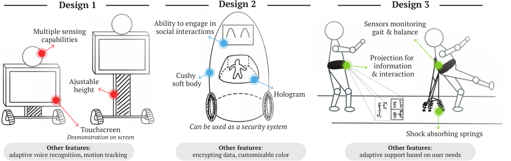
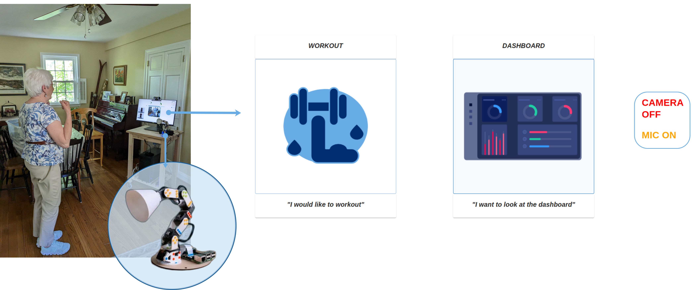

Studio / Exercise Robots
Designing Robot Exercise Partners
Co-Designing with Older Adults, for Older Adults: Robots to Promote Physical Activity
Victor Nikhil Antony*, Sue Min Cho*, and Chien-Ming Huang
*Equal contribution.
The in-home case study is a separate paper by Victor Nikhil Antony and Chien-Ming Huang: “Designing Social Robots that Engage Older Adults in Exercise: A Case Study,” HRI 2024 Workshop on HRI for Aging in Place.
Lack of physical activity has severe negative health consequences for older adults and limits their ability to live independently. Robots have been proposed to help engage older adults in physical activity (PA), albeit with limited success. There is a lack of robust understanding of older adults’ needs and wants from robots designed to engage them in PA.
We report on a co-design process where older adults, physical therapy experts, and engineers designed robots to promote PA in older adults. We found a variety of motivators for and barriers against PA, conceptualized a broad spectrum of possible robotic support, and found that robots can play various roles to help older adults engage in PA.
A follow-up case study evaluated a prototype social robot, designed to lead users through exercise sessions with motivational feedback, in the home of a 78-year-old participant for one week.
Co-design process
We employed the co-design methodology to empower older adults as drivers of the design for robots to engage them in PA. Our approach involved three stages to understand the barriers and motivators for older adults to engage in physical activity, and to collaboratively design, with various stakeholders, assistive robots to engage older adults in physical activity.
We recruited 14 participants (age range 65–94) with a variety of physical abilities and living conditions, from condos and houses to a rehabilitation center.

Semi-structured interviews
Interviews with nine older adults, each around 40 minutes, to gain an initial understanding of their PA context, to probe them to think about potential robots for promoting active living, and to build rapport.
Co-design workshops
A 1.5-hour workshop with two experts in older adult physical therapy and personal training, and three older adult workshops of around 1.25 hours each. Workshop #3 was held at a rehabilitation center with three older adults with amputations.
Design and critique
Older adults had exciting ideas, but a general lack of comfort with sketching restricted their ability to communicate them. Three graduate students developed the ideas into more concrete robotic plans, which older adults then critiqued.
Collaborative map-making was the key dialogue driver across workshops. Two researchers coded all transcripts; inter-rater reliability (Cohen’s Kappa on 20% overlap data) was 0.81.
Motivators and barriers

We found significant variety in the types of PA older adults find enjoyable.
Motivators included social benefits, mental benefits, physical benefits, progression, active lifestyle, and community factors. Barriers included accessibility issues (i.e., infrastructure, environmental, financial, technical, social), physical limitations, mental state, and commitments. Both were consistent with previous findings.


Robot roles
The discussion on barriers and motivators helped facilitate the exploration of a variety of roles robots can play to amplify PA in older adults.
Robots as trainers
An apparent yet practical solution, intended to improve accessibility to learning how to exercise and trying different exercises: targeted workouts such as yoga and strength training, and group classes such as water aerobics and group dance.
- Roles: personal trainer, group activity leader, motivational coach
- Features: progression and adaptation, encouragement, informative feedback
Robots as companions
Companionship can be realized in many forms to directly and indirectly encourage older adults to pursue enjoyable physical activities. Robots can accompany older adults during PA (e.g., walking, creative hobbies) to counter loneliness.
- Roles: friend or partner, informant or personal assistant, housekeeper
- Features: emotional support, social support
Robots as augmenters of physical abilities
Robots can augment older adults’ physical abilities, enabling them to engage again in enjoyable PA (e.g., biking, skiing and hiking). These robots would only provide support as needed and allow the user to exert themselves as much as they safely can.
- Role: physical support robot
- Features: wear-ability, informative guidance
“The social activity that comes with doing group exercises is very, very valuable... when it’s hard to differentiate between social activity and exercise activity. That’s good.”
Joe (M/75)
“I think for older people, as their friends pass away, and their partner passes away, it gets harder to meet other people and they’re lonely... because they have physical limitations, they can’t just go out and make friends.”
Betty (F/71)
“Fall risk is more of a factor in my mind, I just try to be honest with myself about the reality of those things... I’ve definitely made the involuntary transition from more active to less active”
Clement (M/79)
Potential designs
We consolidated design guidelines and robot proposals from the previous stages so that engineers could develop the older adults’ ideas into more concrete robotic plans. Older adults then critiqued each design, marking features they liked and disliked.

Design 1
A large touchscreen displays demonstrations of exercises, and the adjustable height allows ergonomic posture for the user. Evaluators found the touchscreen useful but suggested adding remote control, because not all older adults may be comfortable with using a touch screen.
Design 2
A robot with a cushy, soft exterior in a customizable color that engages in social interactions and can also be used as a security system. A hologram supports interaction or entertainment, and a charging home provides a physical privacy barrier. Evaluators were favorable towards it.
Design 3
A belt that projects gait information on the ground and catches the user in case of an unavoidable fall. Evaluators were not convinced; they emphasized the need for simplicity, practicality, and ease of use, and preferred a more familiar design of a walker.
General robot design guidelines
A wide range of robotic assistance can help promote PA in older adults, each with its own set of required functions. Regardless of robots’ intended roles, the following general design guidelines should be considered.
| Guideline | What we found |
|---|---|
| Interactivity | Engaging dialogue with motivational feedback is a vital feature for many older adults and use cases, although the required level of interactivity depends on the scenario. |
| Verbal and non-verbal communication | Clear speech, visible text, proper gaze and discernible movements. An expressive face was suggested for the functional reason of allowing users to lip-read. |
| Adaptive to users’ preferences and abilities | As individuals grow, their abilities evolve and their living conditions change; robots need to account for these changes and adjust to the user’s mood. |
| Easy to use | Long-term uptake would be dependent on a shallow learning curve and effortless usage. |
| Mindful towards privacy | Almost all older adults expressed concern for the misuse of their data, but were open to relevant data being shared with stakeholders such as physicians and informal caregivers. |
| Appearance | Those looking for social support preferred a humanoid or zoomorphic look; those in search of functional support preferred a utilitarian look. There was a clear desire for a compact robot. |
| Respectful interactions | Interactions need to respect older adults’ expectations for self-reliance and independence; condescending or discouraging behaviours can damage relationships with them. |
“A lot of people as they get older, rely on being able to see a mouth. I see the mouth, and what the mouth shape say of the sound becomes very important.”
Alfred (M/67), on lip-reading
“If you discourage [an older adult client], or if they felt like you were like condescending to them, they will just stop showing up.”
Arlo, physical therapy expert
Older adults: a diverse population
Although we found general trends, these robots must be personalized to individual preferences in terms of the robots’ role, morphology, and behavior. Some individuals may only need companionship and reminders, while others may need personal training and mobility assistance.
Access equals impact
These robots need to be financially accessible to be effective, as a large portion of older adults are on fixed incomes. Societal actions are also needed to lower barriers, such as improved access to PA facilities.
Ethics and liabilities
The issue of liability needs to be addressed, and ensuring user safety may thwart users’ privacy in many situations. To establish robots as an effective tool to engage older adults in PA, there is a critical need for a code of robotic conduct.
System overview
Towards understanding older adults’ needs from exercise-promoting social robots in long-term, in-home scenarios, we developed a prototype social robot platform designed to engage older adults in daily exercise sessions. We extracted design guidelines from the co-design study; the prototype fits most closely to the trainer role.

Exercise session
Five exercises (bicep curls, side raises, front raises, oblique twists, and chair squats), each shown in a demonstration video and followed by three sets of ten reps. The robot counts reps out loud and gives motivational feedback such as “you got this! almost there”.
Progress dashboard
At the end of each session, a dashboard visually represents the user’s weekly progress, and the robot articulates a verbal summary of the user’s achievements, designed to prompt reflection and goal setting.
Sensing and implementation
Users say “Hey Poppy” or use the touchscreen. Mediapipe pose detection and a K-Nearest Neighbours model count reps, and a Fitbit Versa 2 provides real-time heart rate. The system runs on a ROS2 backend and a ReactJS frontend.
In-home case study
We deployed the prototype for seven days to the home of a 78-year-old woman living alone at her suburban house with no notable mobility constraints or health conditions, and conducted a semi-structured interview at the end. She engaged with the system for daily exercise all seven days, although according to the participant this adherence was largely driven by study protocol.
User autonomy
The participant wanted options to omit certain exercises, reorder the sequence of activities, and adjust the frequency of exercise sessions to match her preference and lifestyle.
Variety and engagement
A lack of diversity in the exercise offerings led to a perception of monotony. She did not like the robot saying her name often and suggested integrating music instead.
Existing alternatives
She uses exercise walk-through videos that she finds more engaging and better suited to her needs. Social robots must be sufficiently more engaging, helpful and convenient than existing alternatives.
Motion tracking
Erroneous exercise recognition disrupted the flow of activity, undermined trust, and could aggravate existing physical ailments. A coarser motion tracking system could support a wider range of physical activity.
Robot embodiment
The absence of significant commentary on the robot signals a need to harness its physical embodiment and non-verbal behaviors, for example by having the robot imitate the user’s exercises as an exercise partner.
Wearable sensing
The participant found the Fitbit excessively cumbersome, using it only during exercise sessions. Making it less cumbersome matters for analysing the intervention’s impact on daily activity and health statistics over time.
“I don’t want to work out an hour a day, 20 mins a day would be fine but I would prefer it being an hour, 3 days a week.”
Case study participant, on autonomy
“There are so many exercise videos out there that are so nice... I personally don’t need that system...”
Case study participant, on existing alternatives
“I have an arm issue, and unless I completed the exercise exactly the way they [the robot] wanted it done, it wouldn’t move forward...”
Case study participant, on motion tracking